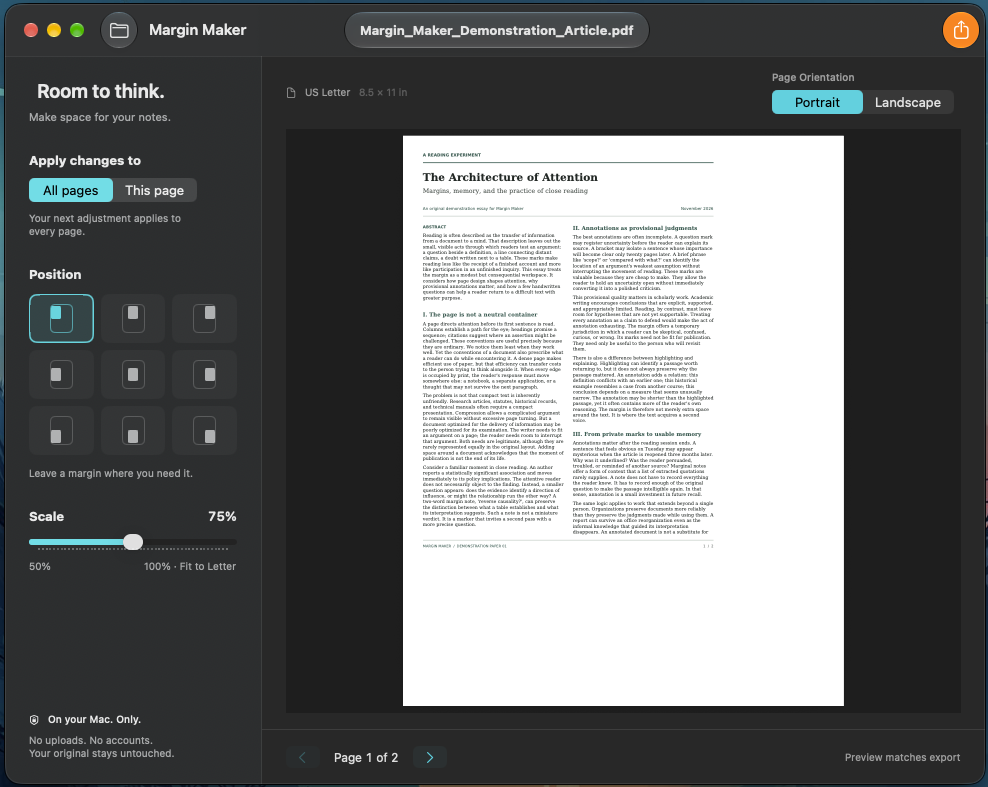

A small Mac app for big ideas
Make room to think.
Give your PDFs a little breathing room. Add space for notes, questions, and ideas, then get back to reading.
Free & open source · Apple Silicon · v0.3.0
First time installing? A few things to know01 A little space, a different perspective
The reading stays. The room is yours.
A reading, reimagined
US Letter · Portrait
Same words. New possibilities.
A place for
your side of
the conversation.
Scale the original page. Give it a new position. Leave yourself a generous margin for whatever comes to mind.
75% scale Middle-left
02 A simple ritual
Less fiddling. More reading.
From a crowded page
to a little breathing room.
-
01 / IMPORT
Drop in your PDF.
Open Margin Maker and drag in a document.
-
02 / ADJUST
Make some room.
Choose your page orientation, scaling, and positioning.
-
03 / EXPORT
Get back to thinking.
Save the adjusted PDF and use your preferred annotation app.
A look inside
Your reading.
Your room to think.
Choose a layout, find the right position, and export a separate PDF. A few simple controls, all on your Mac.
View full-size screenshot

03 Thoughtfully uncomplicated
Just enough tools.
All your own space.
A small, free utility for readers, students, and researchers. One job, with care.
A page that fits your thinking.
Portrait or landscape US Letter layouts, with your reading kept in proportion.
A little room. Or a lot.
Scale from 50% to 100% and choose from nine positions.
A fresh copy. Your original kept.
Export a separate PDF. The imported source file is protected from replacement.
Your documents stay on your Mac.
Processing happens locally, without uploading your readings to a service.
Free to use. Open to everyone.
Open-source software under the MIT license. No accounts or subscriptions.
04 A note before you begin
Good to know.
A personal, open-source project, with a few edges to be aware of.
Installation instructions Read the v0.3.0 release notesFor Apple Silicon Macs.
The current download contains Apple Silicon code only. Intel compatibility, macOS 13, and installation on another Mac have not been verified.
An extra step to open.
The app is ad-hoc signed and not Apple-notarized. macOS may require an additional step to open it. The installation guide explains the application-specific steps.
Keep your source PDFs.
Some PDFs using /ActualText may lose semantic or accessibility-related text information, affecting copying, searching, or text extraction even when the page looks correct. Not all PDF structures are preserved. See the compatibility documentation.
Make room before making notes.
Existing PDF annotations may not be preserved. Add margins first, then highlight or write on the exported copy in your annotation app.
For the thoughts between the lines
Your next idea needs a little room.
Download for MacFree & open source. Made for a quieter kind of productivity.